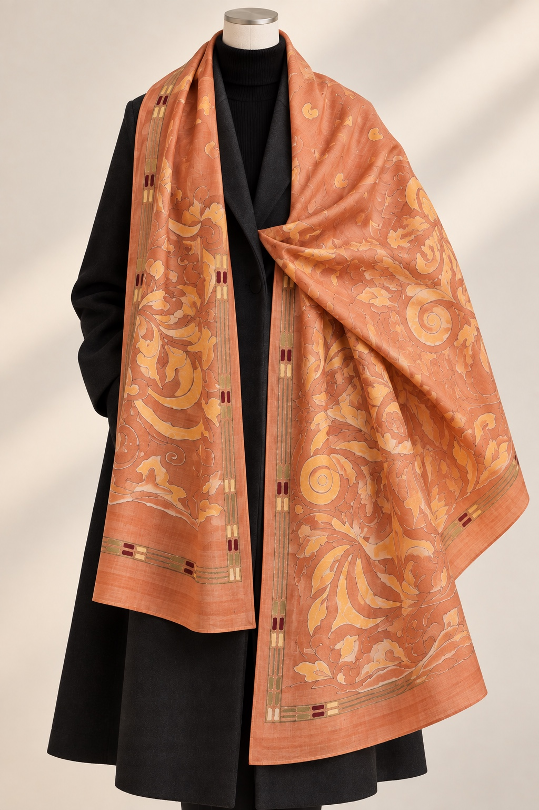

Design Reference 01 OS-01
Autumn Emberオータム・エンバー
深みのあるオレンジとコッパーをベースに、
流れるような植物や装飾的なモチーフを描いたデザイン。
ブラックやチャコールのコートにも映える、
温かみのある秋冬のアクセントです。
Flowing botanical and ornamental motifs unfold across rich orange and copper tones.
A warm, expressive design that stands out beautifully against black, charcoal and other winter neutrals.
- 素材 / Material
- シルク 100% / 100% Silk
- 制作 / Production
- 受注制作 / Made to Order
- 納期目安 / Estimated Timeline
- 約10週間 / Approx. 10 weeks
- サイズ / Size
- 約92 × 250 cm / Approx. 92 × 250 cm
- 価格 / Price
- ¥14,500（税込）
制作内容や配送状況により前後する場合があります。
Timing may vary depending on production requirements and
shipping conditions.